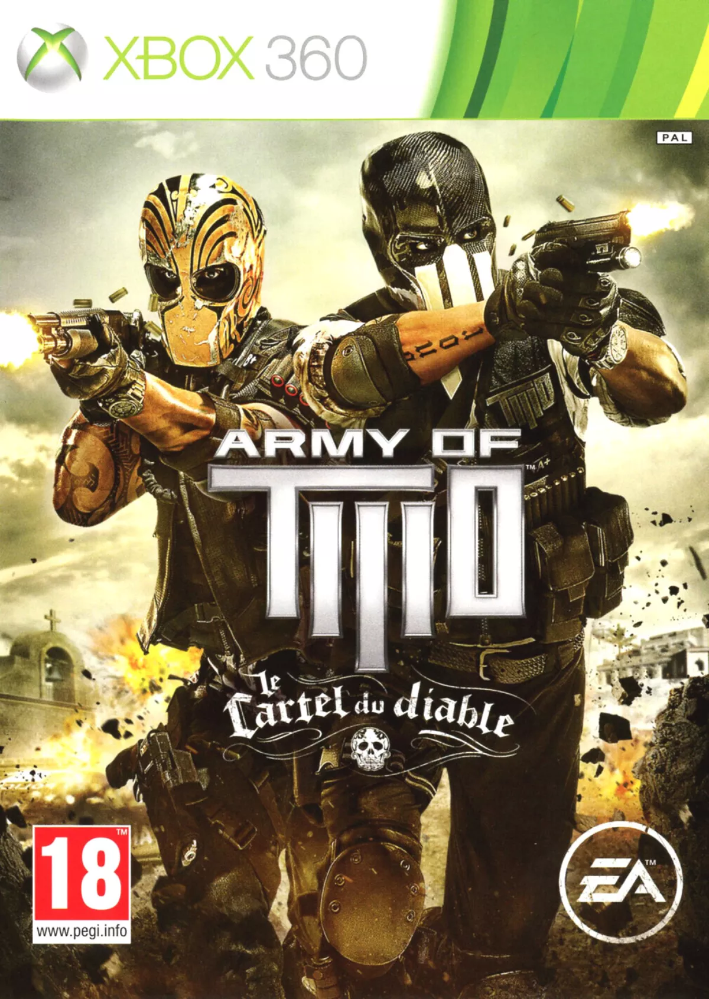
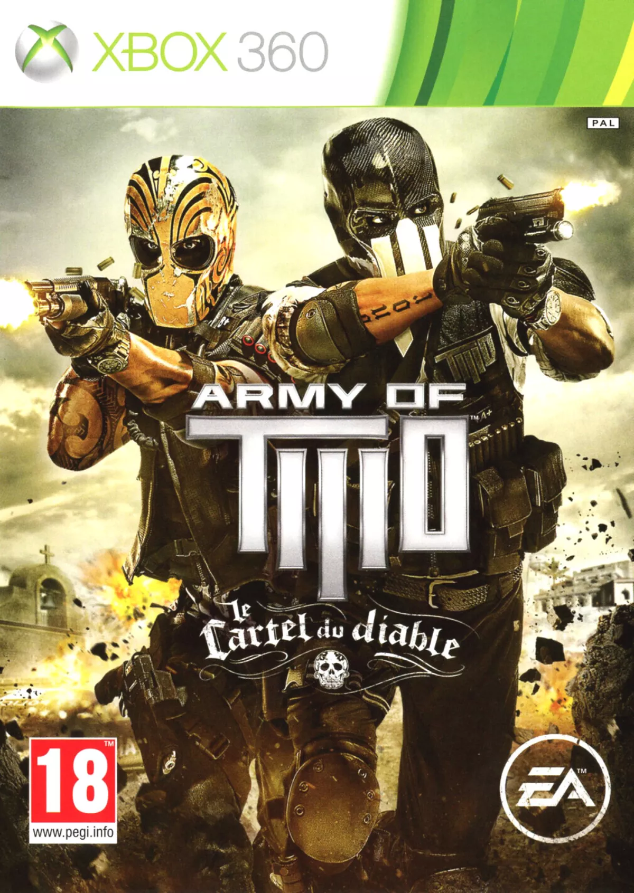

ARMY OF TWO
Army of Two es una serie de juegos de disparos en tercera persona desarrollada por EA Montreal. Los juegos se centran en la historia de dos mercenarios, Rios y Salem, que trabajan juntos como equipo para completar misiones peligrosas en diferentes partes del mundo. Los jugadores pueden jugar en modo cooperativo con un amigo o en solitario con un compañero controlado por la IA. Cada juego de la serie ofrece una combinación de acción intensa, estrategia táctica y personalización de armas. La serie Army of Two ha sido elogiada por su jugabilidad cooperativa y su enfoque en la camaradería entre los personajes principales.

 
